End of Chapter Questions and Solutions
Chapter 1 Solutions
Power Plant Fuel Systems
- 1. Make a single-line sketch of an oil-handling layout for a modern high-pressure, high-output boiler. Include details of the storage, heating, pumping, and filtering methods employed.
![A detailed single-line schematic diagram of a power plant fuel oil system. The system starts with a fuel oil storage tank at the bottom left, equipped with a fill line, a vent with a flame arrestor, a drain valve, and a steam smothering line. A suction box is at the bottom of the tank, with a 'Low suction' sludge pump-out and a 'High suction' line leading to a 'Steam-driven fuel-oil pump'. A 'Relief Valve' is on this line. The fuel then passes through 'Suction strainers' to an 'Electric fuel-oil pump', which is followed by an 'Air chamber'. The fuel then goes through 'Heaters' and a 'Relief Valve' to 'Discharge strainers'. A 'Return' line with a 'Trap' leads back to the tank. The fuel then splits into two parallel lines, each containing a 'Burner'. Above the burners is a header with a 'CONSTANT FLOW CYCLE CONTROL VALVE WITH BYPASS' and an 'Automatic Control Valve'. An 'Orifice' is also shown in the header. Arrows indicate the flow of fuel oil throughout the system.](820515db47ded68f5e0b625f4ec7d2c1_img.jpg)
The fuel oil storage tank is a carbon steel vessel designed for a maximum pressure of 100 Kpa gauge pressure. The tank is vented to atmosphere. . A flame arrestor is attached to the vent to reduce the possibility of a tank explosion. The purpose of the
steam smothering line is to put out any fire that may occur in the tank. There is a low and a high pump suction line in the tank. The reason for this is that in the event water and sludge get into the low suction line, the high suction line can be used while the water and sludge are removed.
The strainers used in this system are duplex strainers, so that the baskets can be switched for cleaning without having to shut down the system. The mesh size of the filter media will depend on the type of fuel oil being used. If No. 2 fuel oil is being used a 100 mesh can be used. If a No. 6 fuel oil is being used, then a 10 mesh filter should be used.
The fuel oil heater is generally a shell and tube heat exchanger.
The fuel oil pumps used for a fuel oil system are generally usually a positive displacement gear type of pump, like a rotary screw pump.
2. What is the purpose of the Constant Flow Cycle Control Valve?
The purpose of this valve is to return the excess oil that is not used by the burners, to the oil storage tank. This valve also is used to create a pressure differential between the fuel oil supply and return for a mechanical atomizing burner, in order for the oil to be mechanically atomized.
3. (a) What is the minimum temperature that the fuel oil in the storage tank can be in order for the fuel oil pump to be able to pump the fuel oil to the heater?
38 °C
(b) What temperature must the fuel oil be at for mechanical atomizing, and for steam atomizing?
For mechanical atomizing the temperature of the fuel oil must be at 104 °C. For steam atomizing the temperature must be at 85 °C.
- 4. Sketch a supply system to a gas-fired power plant. Show the pipework and valves and indicate the gas pressures you would expect to find employed.
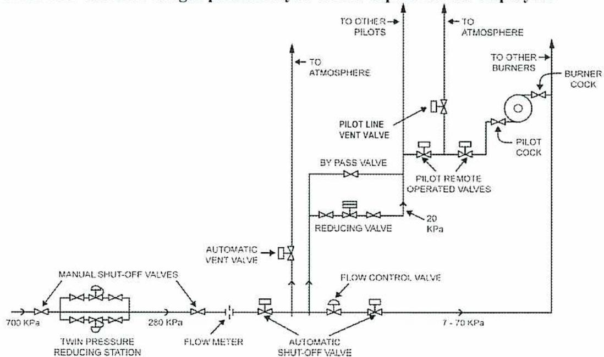
The diagram illustrates a gas supply system starting from a 700 kPa source. The gas passes through a 'TWIN PRESSURE REDUCING STATION' with 'MANUAL SHUT-OFF VALVES', reducing the pressure to 280 kPa. It then passes through a 'FLOW METER' and an 'AUTOMATIC SHUT-OFF VALVE'. A branch with an 'AUTOMATIC VENT VALVE' leads 'TO ATMOSPHERE'. The main line continues through a 'FLOW CONTROL VALVE' and a 'REDUCING VALVE' set to 20 kPa. From here, a 'BY PASS VALVE' and 'PILOT REMOTE OPERATED VALVES' lead to a 'PILOT COCK' and 'BURNER COCK' for 'TO OTHER BURNERS'. Another branch with a 'PILOT LINE VENT VALVE' leads 'TO OTHER PILOTS'. The final supply pressure is indicated as 7 - 70 kPa.
- 5. Using a single line sketch, show the ash removal points on a pulverized coal fired boiler.
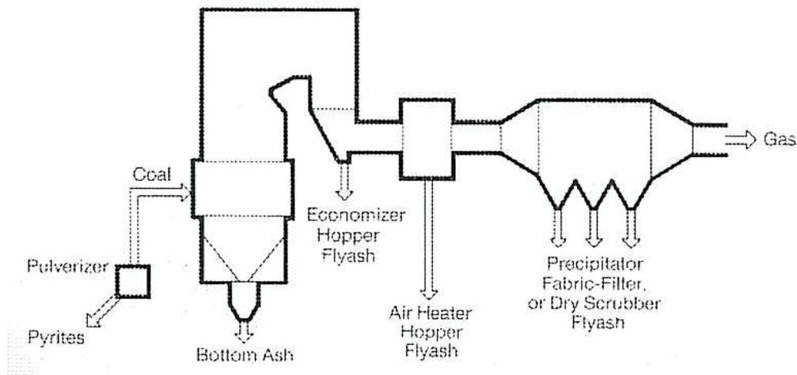
The diagram shows a boiler system with the following components and ash removal points: 'Coal' enters a 'Pulverizer' which also receives 'Pyrites'. The pulverized coal is fed into the furnace. 'Bottom Ash' is removed from the bottom of the furnace. 'Economizer Hopper Flyash' is removed from the economizer. 'Air Heater Hopper Flyash' is removed from the air heater. 'Precipitator Fabric-Filter, or Dry Scrubber Flyash' is removed from the exhaust gas stream. The exhaust gas is labeled 'Gas'.
The bottom ash is ash that is removed from the bottom of the furnace. This ash and slag dropping out of the furnace are quenched as they enter the water-filled bottom ash hoppers below the furnace. When the ash is removed from the hopper, a sluice gate will open and the ash grinder will start. The ash grinder will grind up the ash and slag so that it will be fine enough to go through the bottom ash pumps. High pressure water will carry this slurry to the suction of the bottom ash pumps. The pumps will pump the slurry to an ash pond, or to a settling tank environment.
The flyash is carried out of the furnace with the flue gas flow. This ash must be removed from the flue gas flow before it exits the stack.
The fly ash is removed from the flue gas stream from the:
- • Economizer hoppers
- • Air heater hoppers
- • Precipitator hoppers
The fly ash is removed from the hoppers by high velocity air and carried to a fly ash silo, where it is deposited in hoppers. The ash is then trucked away.
Chapter 2 Solutions
Power Plant Water and Steam Systems
1. What are the two main purposes of condensate polishers?
In all designs the purpose of the condensate polisher is:
- • Removal of suspended solids by filtration
- • Removal of dissolved solids by ion exchange.
2. List the steps in starting up a steam piping system.
The steam piping needs to be checked before being put into service to insure:
- • Repairs have been completed
- • Insulation has been reinstalled
- • Anchor points and piping supports are in place
- • Safety valves and vents are in a ready to run position
- • Steam trap isolation valves are open – some drains to atmosphere may be opened until they are blowing dry steam
The piping system pressure and temperatures are increased gradually. If possible, a steam user at the end farthest from the boiler can be put online. Steam vents and letdown stations are checked for proper operation. This permits a small steam flow through the steam and condensate systems. The piping is physically checked for signs of leaks, and piping anchors and expansion is checked.
3. (a) List 5 factors that will influence the type of treatment program that will be used for a cooling water system.
Any 5 of the following is correct.
- • Characteristics of the cooling water
- • Characteristics of the make-up water
- • Type of cooling water system – open-recirculating, closed re-circulating, once-through
- • Volume of the cooling water system
- • Material that are present in the cooling water system
- • Temperatures that will be attained in the various parts of the system
- • Flow velocities through the system
- • Is the cooling water on the shell-side or the tube-side.
- • Is there provision for blow-down
- • Will the cooling water system be operated continuously or intermittently.
(b) List 4 examples of maintenance performed while a cooling tower is shutdown.
- • Cleaning out of the cooling tower basin
- • Inspection and repair of the cooling tower wood structure and fill
- • Mechanical inspection and repairs to the fans, gearboxes and motors.
- • Inspection of cooling water side of heat exchangers. Dirty exchangers are often acid cleaned or cleaned using high pressure water jets.
- • Chemical tanks are cleaned out and pumping equipment repaired as required
5. (a) Define the following terms – primary sludge, activated sludge, tertiary sludge, mixed liquor.
Primary sludge – Sludge that settles out in the oil/water separator tank.
Activated sludge –This is the sludge that is formed in the aeration tanks. This sludge is formed when the dissolved organic matter and nutrients are removed from the wastewater by biological means. Activated sludge has a high concentration of microorganisms that feed on the organic material in the water flow
Tertiary sludge – The sludge that is removed in the polishing unit is called tertiary sludge. It is made up of colloidal materials are precipitated out with the use of flocculants.
Mixed Liquor –This is what the mixture of sludge and water from the aeration tanks is called.
(b) Why is it important that the temperature of the water being released into a lake or river from a waste water system not be too high?
Temperature affects the ability of water to retain dissolved oxygen. High temperature water should not be dumped into a river or lake as the increase in temperature produces deaeration of the water and increases oxygen demand. Where the temperature of a stream or lake will be noticeably affected by a quantity of higher temperature water, some method of cooling must be employed to drop the incoming water temperature to near that of the receiving stream.
6. How is steam condensate different from demineralized water?
Steam condensate is condensed steam as found in the condenser hotwell, the low pressure heaters and the deaerator. It contains no hardness, but has a low conductivity due to amines added for ph control of the condensate and boiler feed water system. . Demineralized water is high purity water that has had all impurities removed. It contains no suspended solids or dissolved solids. It has no chemicals added and is suitable for makeup to the steam systems.
7. What are three sources of potable water used in plants?
Three sources of potable water for plant use are: well water, municipal water and filtered water that has had extra treatment and testing making it suitable to meet potable water guidelines.
8. What is the difference between open feedwater heaters and closed feedwater heaters?
Most steam plants have one open feedwater heater (deaerator) in the circuit. An open heater has the steam in direct contact with the water being heated.
Closed feedwater heaters are heat exchangers, usually of the shell and tube type. Steam, which is bled off the L.P. turbine, condenses in the shell side and heats the feed water passing through the tube side. They are termed closed as there is no direct contact of the heating steam and condensate and the boiler feedwater being heated.
9. A deaerator is not producing a low enough level of dissolved oxygen. What things would you check to troubleshoot the deaerator problem?
- • The deaerator vent is checked. The venting flow can be increased and the oxygen levels retested.
- • The temperature of the water in the heating section and storage compartment are compared. They should be within 2°C of each other.
Chapter 3 Solutions
Measurement and Control Components
- 1. Sketch and describe a magnetic pickup type of pressure sensor and state its advantages.
A variable reluctance transducer, or magnetic pickup, uses the pressure sensing element to reposition a magnetic armature. This alters the reluctance of a permanent magnet. The reluctance is then measured by an external bridge circuit, and the resulting signal is utilized to infer the fluid pressure that was sensed initially.
The advantages are:
- - It has no moving electrical contacts to wear out.
- - There is no distortion of the output signal due to friction between the contact points.
- - It can utilize an induced voltage and detect changes in it, which is useful in some circuit designs.
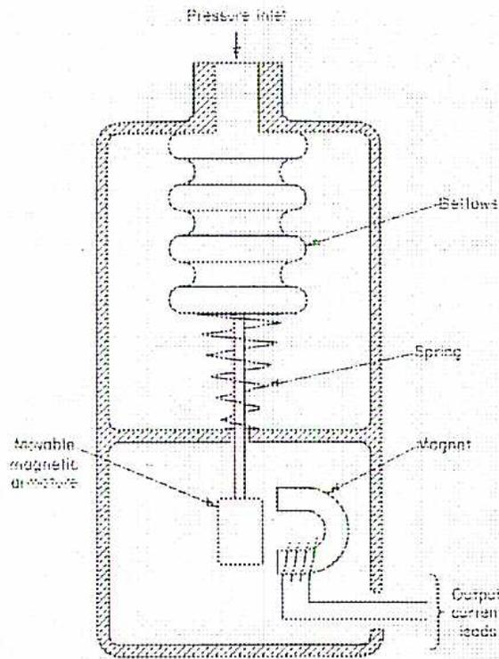
A cross-sectional diagram of a magnetic pickup type pressure sensor. At the top, a 'Pressure inlet' leads into a chamber containing a 'Bellows' element. The bellows is connected to a vertical rod that extends down through a 'Spring'. At the bottom of the rod is an 'Armature'. To the right of the armature is a 'Magnet'. Below the magnet and armature assembly are 'Output current leads' exiting the housing. The entire assembly is housed in a rigid casing.
2. Sketch and describe a tubular LVDT type of pressure sensor, and state its advantages.
An exceptionally accurate and sensitive variation of the variable inductance transducer is the Linear-Variable Differential Transformer (LVDT) transducer. In place of a conventionally wound coil, the LVDT uses a differential transformer, as shown.
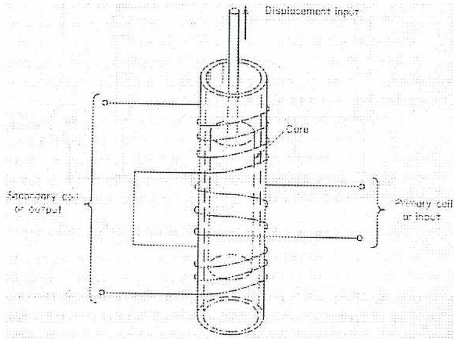
A 3D cutaway diagram of a tubular LVDT sensor. It shows a central hollow tube with three coils wrapped around it. The middle coil is the primary, and the two outer coils are the secondaries. A cylindrical magnetic core is positioned inside the tube, attached to a vertical rod labeled 'Displacement input'. Labels include: 'Displacement input' at the top, 'Core' pointing to the internal cylinder, 'Secondary coil or output' indicating the top and bottom coils, and 'Primary coil or input' indicating the middle coil.
A differential transformer has three coils wound onto a central tube. The centre coil is the primary winding of the transformer, while the outer two coils are separate secondary windings that are wound in series-opposition. An axially movable iron armature constitutes the magnetic core between the primary and secondary coils, and it is positioned by the transducer's pressure sensing element. The voltages induced in the secondary coils by energizing the primary coil with alternating current thus oppose each other, and their net output is zero when the movable core is at its central, balanced, or null, position. This is shown schematically below.
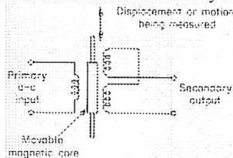
A circuit schematic of an LVDT. On the left is the primary coil with 'Primary a-c input'. In the center is a 'Movable magnetic core' with an arrow indicating 'Displacement or motion being measured'. On the right are two secondary coils connected in series-opposition leading to the 'Secondary output'. The secondary coils are labeled 'a', 'b', and 'c' at their terminals.
As the core is repositioned by the pressure sensing element, the secondary output voltage will increase or decrease in proportion to the amount of core displacement, and its polarity will be determined by the direction of movement away from the balanced position. External measurement of the polarity and voltage can thus be used to infer the amount of core displacement, and thus, the fluid pressure.
The advantage of an LVDT device over other types of pressure transducers is that it can produce an output signal which has a perfectly linear relationship to the measured variable (fluid pressure.)
3. Describe the advantages and disadvantages of the following temperature measuring devices: RTD's, IPRT's, thermistors, thermocouples, and radiation pyrometers.
RTD's have a disadvantage in that the total resistance of the resistor and its lead wires is measured, and the lead wire resistance can be considerable if the probe is placed at a location which is remote from the measuring circuit. They are considered to be extremely accurate, and a platinum RTD is often used as the standard against which other types of temperature measuring devices are compared and calibrated. Contamination of the probe by the material being measured will reduce its accuracy, and so RTD's are usually contained within a thermowell or similar sheath, which is itself inserted into a gas or liquid stream. The use of the thermowell will increase the response time of the probe to temperature variations, making resistance devices somewhat slower in response than other types of temperature measurements.
Although slightly less accurate than a conventional RTD, the IPRT has the advantage of being very rugged, and is well suited to harsh environments that are corrosive, or where vibration levels are high.
Thermistors require somewhat more complex measuring circuits than metal probes do, because their relationship between resistance and temperature is not linear. A large advantage of thermistors is that they can be molded into a variety of convenient shapes in order to be fitted to the equipment that they are required to monitor. Because they have a relatively high resistance, the lead wire resistance is not usually a significant factor.
Thermocouples have the advantage of generating a measurable electrical temperature signal without the need for an external power supply. Another advantage is the linearity of their output when compared to the junctions' temperature difference. However, as with RTD's, there is a potential for error with thermocouples that are placed at a location which is remote from the measuring circuit.
Total-radiation pyrometers are responsive to all wavelengths of radiation. They have the disadvantage of being subject to errors due to heat energy contained in gases, water vapour, or particulate material that is located between the instrument and its measured surface.
Partial-radiation pyrometers are particularly useful for high temperatures, in the range of 1 063°C to 2 000°C, which require single wavelength (monochromatic) measurement. Advantages of partial-radiation pyrometers at high temperatures are their rapid speed of response, reduced errors due to fluctuations in emissivity, and little or no error due to intervening smoke or gases. A disadvantage is sensitivity to fluctuations in ambient temperature, which often requires a water jacket for cooling of the pyrometer.
4. Explain the principle of operation of an inferential type of flowmeter, and briefly describe the different designs of primary elements that are used.
Most power plant flowmeters are of the inferential, or head, type, meaning that they infer a flow rate from a direct measurement of differential pressure. Differential pressure refers to the difference in pressures between two locations in the fluid stream, also referred to as the head difference. The relationship between differential pressure and fluid velocity is evident in Bernoulli's Theory. Once the fluid velocity is found, then fluid flow is calculated from the Equation of Continuity.
For flowmeter use, two locations in the fluid piping or ducting will be tapped for fluid pressure impulse lines, with one tap on either side of a device which creates a differential pressure across itself by constricting the fluid flow path. The Venturi Principle indicates that fluids in a converging stream will gain velocity, but that their pressure will be reduced, and that the reverse happens as the stream diverges. The two taps are placed as close together as is reasonable practical, in order to minimize pressure losses due to friction. The two pressures are then piped to an instrument which measures the pressure difference, and uses this measurement to deduce the rate of fluid flow.
The Venturi tube, or Venturi meter, is the most common of the inferential flow measurement devices. It consists of a convergent-divergent tube placed in the flow path, with flow being inferred from measurement of the differential pressure between the tube's inlet and its throat.
An orifice plate is a thin metal plate which is inserted into a run of piping, typically by placing it between two successive lengths of piping at the joint. A hole, or orifice, in the plate allows liquid to pass through, but restricts the flow in order to create a pressure drop and measurable differential pressure.
A flow nozzle is a differential pressure measuring element which is a compromise design between a Venturi tube and an orifice plate. It has the curved form of a Venturi tube, avoiding the abrupt constriction of an orifice plate and the resulting large, permanent pressure drop.
A Pitot tube arrangement for differential pressure measurement consists of two tubes which are placed into the fluid stream and connected to a differential pressure measuring instrument. One tube has a small opening that faces directly into the fluid flow. Fluid velocity at the opening is zero, as all of the velocity energy, or velocity head, is converted to pressure head at that point. Therefore, the pressure which is sensed is entirely due to a combination of fluid velocity and static pressure. The second tube is connected at a right angle to the flow, so that it is exposed to static pressure only.
5. Sketch and describe a mercury manometer flow transmitter with built-in square root extraction.
This is a mercury filled inverted bell manometer with the inner bell parabolically contoured for square root compensation, called a Ledoux bell.
![A detailed cross-sectional diagram of a mercury manometer flow transmitter. The central feature is an inverted bell, labeled 'Ledoux bell', which is parabolically contoured. The bell is filled with mercury and has a 'High pressure connection' at its base. The bell floats in a chamber containing mercury. A 'Low pressure connection' is located at the top of the chamber. The vertical movement of the bell is transmitted via a 'Forked lever' and a 'Pull' mechanism to a 'Spindle in Pressure tight gland', which is connected to a recording pen or transmitter. A 'Mercury drain' is located at the bottom of the chamber. The diagram is labeled with 'Pb' for pressure and 'Chert' for the chamber wall.](e3b8510f6a2194e250205ab7bc38076d_img.jpg)
In this design, the internal bell float has the high pressure connection directed to its interior, while the low pressure connection is directed to the top of the chamber surrounding the float. Mercury is free to rise or fall both within the bell and in the outer chamber. The bell floats on the mercury and will rise or fall until the pressures acting on it are in equilibrium with its own buoyancy in the mercury. The vertical movement of the float will be linear with the changes in the differential pressure, and are transmitted to an external recording pen by a mechanical linkage attached to the bell. In place of the recording pen, a variety of mechanical or electrical transmitter devices can be installed which will relay the manometer's output to a control system by means of either pneumatic (air) pressure or electrical current or voltage adjustments.
6. Sketch and describe a manometric device for monitoring a boiler's drum level.
Differential pressure measurement is required in order to use a manometer when the vessel in question is a pressure vessel, as, for example, when measuring the level in a boiler steam drum. Comparing the pressure at the top of the tank or drum (the steam space) with that at the bottom (the water space) will produce a differential pressure which is due to the head of the water level. This is achieved as shown in the sketch.
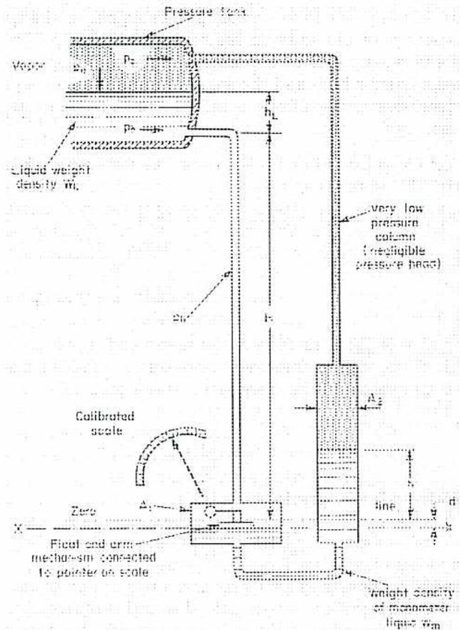
The diagram shows a boiler drum connected to a differential pressure manometer. The boiler drum contains 'Vapor' at pressure \( P_v \) and 'Liquid' with 'Liquid weight density \( W_L \) '. A 'Pressure Tank' (condensing pot) is at the top of the steam-side sensing line. The manometer consists of a large chamber containing a bell-shaped float. Labels include:
- \( h_L \) : Height of liquid in the drum.
- \( h \) : Height of the liquid column in the sensing line.
- 'Very low pressure column (negligible pressure head)': Refers to the steam space above the manometer liquid.
- 'Calibrated scale' with a pointer.
- 'Float and arm mechanism connected to pointer on scale'.
- 'Zero' line and reference line 'X'.
- 'Weight density of manometer liquid \( W_m \) '.
- Pressure points \( P_v \) and \( P_L \) are indicated within the drum.
The outer sensing line, from the top of the vessel, is usually filled with liquid, and the device is calibrated to allow for this extra head imposed on the narrower chamber of the manometer. In the case of a boiler drum, this is an important requirement in order to protect the instrument from contact with steam, and it is usually achieved by placing a condensing pot, or small chamber, at the top of the sensing line, which allows the steam to condense. The resulting water condensate then fills the sensing line. The steam side sensing line thus becomes a constant pressure line, while the water side sensing line contains a variable pressure that is dependant on water level.
The vertical movement of the float will be controlled by the changes in the differential pressure, and is transmitted to an external recording pen by a mechanical linkage attached to the bell. In place of the recording pen, a variety of mechanical or electrical transmitter devices can be installed which will relay the manometer's output to a control system by means of either pneumatic (air) pressure or electrical current or voltage adjustments.
7. Explain the criteria for choosing a type of valve and valve disc to use as a control valve.
In some applications, a control valve is simply required to provide open or closed service, without any need to modulate the flow rate or regulate the fluid pressure. The operator then becomes, in effect, an on/off type of control device. In this type of service, gate valves, ball valves, and butterfly valves are often used. The characteristics of the valves, and the rationale behind their selection, are the same as for any application of a manually operated valve for similar service.
More common is a need for a control valve to modulate its position, throttling the fluid that it is controlling in order to maintain a set flow rate, pressure, temperature, or downstream or upstream liquid level. By far the most common design of valve for this service is the globe valve. The valve disc and seat are parallel to the main flow path, reducing erosion on the valve parts and making the valve better suited to throttling service. A disadvantage of this design is that globe valves produce a much greater loss of velocity head due to their internal resistance to flow, and this loss is typically between 50 and 80 times what the equivalent loss is for a gate valve of the same size. Globe valves are also somewhat more difficult to open and close when fluid pressure is applied to them, and this typically limits their use to sizes below approximately 300 mm in pipe diameter.
Globe valves that are selected for control valve use will often have a plug type disc, which is a long tapered disc that is best suited for throttling service. Flat discs or conventional discs with a shorter taper are more prone to wear and wire drawing, and so are less commonly used. A cage type disc is very popular, with valve disc and seat trim that has a series of ports, or openings, on its side. This design will minimize the pressure drop and wire drawing that occurs as the valve closes against fluid pressure, and will also make the valve easier to open and close. For many control valve designs, the internal trim is removable and replaceable with a variety of optional designs, in order to customize the valve disc and seat configuration for various fluids, pressures, and application requirements.
An advantage of globe valves for control valve service is that they can be designed for either downward or upward opening movement, so that they can accommodate valve operators that move in either direction. However, the direction of flow through a globe valve is pre-set in order to minimize the erosion and pressure drop, and so care must be taken to ensure that they are installed correctly in the pipework, with flow entering the valve on its designated downstream side.
8. Sketch and describe the purpose and operation of a pneumatic positioner.
Pneumatic control circuits will usually require the use of a positioner, which is a device that regulates the air pressure supplied to the valve operator, so that the pressure supplied is proportional to the demand for valve opening from the control system. It is, in effect, a pilot valve or pilot mechanism for the pneumatic operator.
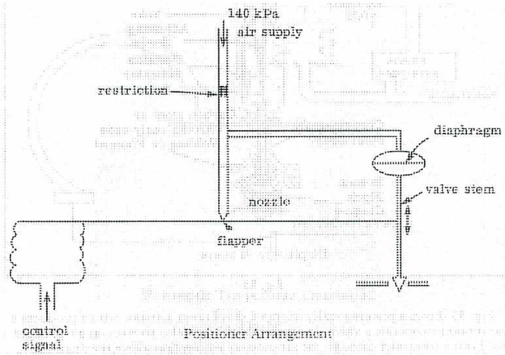
The diagram illustrates the internal mechanism of a pneumatic positioner. At the top, an 'air supply' line is labeled '140 kPa'. This line leads to a 'restriction', which then connects to a 'nozzle'. A 'flapper' is positioned directly in front of the nozzle. The flapper is part of a horizontal bar that is pivoted. On the left side of this bar is a 'bellows' (represented by a dashed outline) connected to a 'control signal'. On the right side, the bar is connected to a 'diaphragm', which is in turn connected to a 'valve stem'. The valve stem extends downwards. The entire assembly is labeled 'Positioner Arrangement' at the bottom.
In this arrangement, the control signal is applied to a bellows, which positions a flapper in relation to a nozzle. An increase in control signal pressure will move the flapper closer to the nozzle, causing the nozzle pressure to increase, and downward movement of the valve stem results. As the valve stem moves downward, the flapper is moved away from the nozzle, giving proportional action and stabilizing the valve movement. If valve stem movement is prevented due to friction or other causes, the nozzle pressure will continue to increase until the resisting force is overcome.
Chapter 4 Solutions
Control Instrumentation Systems
- 1. Explain with a sketch the concept of proportional-plus-reset-plus rate control for boiler steam pressure.
A proportional controller will not only recognize that the measured variable is above or below set point, but it also takes into account the amount of variance. In this way, its output, and the positioning of the final control element, will be modulated rather than simply operating in a repeating on-off cycle.
A limitation of a proportional controller is that it cannot entirely eliminate error and return the variable to the set point. There will always be a difference between the new corrected value of the variable and the set point, and this difference is known as the “offset.”
The offset of a control system can be eliminated by the addition of a “reset” or “integral” function to the proportional controller. This causes the proportional action of the controller to repeat itself until the controlled variable returns to its set point. In other words, the integral or reset function keeps increasing the controller output until the variable is at the set point once again.
In many cases, the variable will increase or decrease from the set point very rapidly, and at an increasing rate. For example, if all load is suddenly lost from a boiler, then the steam pressure will increase above set point rapidly and at an increasing rate (until the safety valve or valves blow.) When this happens, the fuel valve controller output must be increased even further than that achieved by the proportional and reset action. This further increase is provided for by “rate” or “derivative” action.
Derivative action is a mode of control that provides an output from the controller that is proportional to the rate of change of the deviation from the set point.
The final result of a proportional plus reset plus rate controller is a quicker return to the set point, because the controller output causes the final control element, such as a fuel valve, to move further in the required direction than if only proportional plus reset action was used.
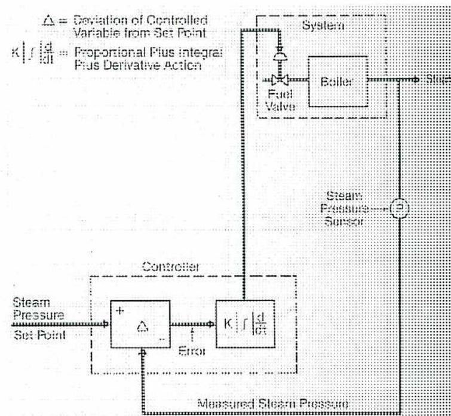
\(
\Delta
\)
= Deviation of Controlled Variable from Set Point
\(
K \left[ 1 + \frac{1}{I} \int dt + D \frac{d}{dt} \right]
\)
= Proportional Plus Integral Plus Derivative Action
2. Explain the concepts of, and reasons for, single element, two element, and three element feedwater control systems.
Control of boiler feedwater can be carried out by a feedwater regulator which is sensitive only to drum water level. In fact, this is often done in small, low pressure boilers, up to approximately 34 000 kg/hr, where the water volume is proportionately high and the steam demand rate is low.
Single element control suffers from an inability to compensate for changes in water level that are caused by changes in the rate of evaporation. These changes become considerable in watertube boilers with small water volume and large areas of tubes exposed to furnace gases. Changes are also substantial in boilers which are subject to sudden large changes or swings in load, as are often experienced when steam is provided for process heating. Additionally, gaseous fuels and fuels which are burned in suspension, such as oil or pulverized coal, permit almost instantaneous changes in furnace heat release, which further intensifies the problem.
A large proportion of the total water content in watertube boilers is contained in the boiler tubes, with a relatively small quantity in the drum. During periods of rapid steaming, steam bubbles occupy a considerable volume of the available water space, often upwards of 35%.
It can be seen that a change in steaming rate will immediately change the water volume, and have a distinct effect on the drum water level. The terms “swell” and “shrinkage,” or “shrink,” are used to describe these conditions.
An increase of load causes an increase in steaming rate, more steam bubbles, and thus a higher water level. The water in the boilers has experienced a swell. Conversely, a decrease of load lowers the steaming rate, reduces the number of steam bubbles, and thus results in a lower water level. The water in the boilers has undergone a shrinkage.
Note that, in each case, the effect of these water level changes upon the single element feedwater controller will be to cause it to make exactly the opposite adjustments to those that are actually required. Increased load requires increased feedwater flow, but the high water level resulting from swell will cause the single element controller to reduce the flow. This effect will be overcome as the disparity between steam and feedwater flow reduces the water quantity in the boiler. However, the initial incorrect movement makes water level control more erratic at times of rapidly changing boiler load, and increases the recovery time.
The two element water level control scheme measures drum water level and steam flow, and uses these to set the required feedwater quantity. The steam flow signal is used as a feedforward signal for the drum level, and enables the control system to be more proactive in anticipating drum level changes.
It can be seen that every kilogram of water that enters the boiler as feedwater is evaporated and becomes a kilogram of steam at the boiler outlet, with the exception of relatively minute quantities lost as leakage, blowdown, etc. Therefore, a controller that measures both steam flow and feedwater flow and operates to maintain equality between the two should have the best chance of success.
The three element controller operates on this principle. The drum water level is included in order to guard against a gradual, progressive diversion away from the optimum level, due to blowdown, or to differences or errors in flow measuring instruments. In effect, the drum level signal becomes a “ trim ” while steam flow and feedwater flow are the primary inputs.
3. Sketch and describe the operation and construction of a spray type desuperheater.
A desuperheater injects a controlled amount of feedwater directly into the steam pipe in the form of a spray. The effect of mixing the cool feedwater with the steam is to reduce the temperature of the latter by the amount corresponding to the heat that is used in evaporating and superheating the feedwater that is introduced.
![A technical diagram of a spray nozzle and venturi section. The main drawing shows a vertical pipe with a spray nozzle at the top. Labels include 'STEAM LINE', 'STEAM FLOW' (indicated by an arrow), 'SPRAY NOZZLE', 'WATER' (indicated by an arrow), 'VENTURI SECTION AND THERMAL SLEEVE SECTION', and 'THERMAL SLEEVE'. To the right, there are three cross-sectional views: 'SECTION A-A' (a vertical cross-section), 'SECTION B-B' (a horizontal cross-section), and 'SECTION C-C' (another horizontal cross-section).](3267a096e9ca525744d8cd820f12eb59_img.jpg)
The spray nozzle is located at the throat of a venturi section which causes increased steam velocity and increases the vaporizing and mixing action. Incorporated with the venturi section is a thermal sleeve located downstream from the spray nozzle, which protects the high temperature piping from thermal shock resulting from water droplets striking the hot surface.
4. Discuss the limitations on implementation of DCS control technology.
DCS installations have the following limitations and disadvantages:
- • The hardware, and sometimes the software, tends to be proprietary in nature, and the components from different vendors do not always work together. Therefore, a commitment to use DCS controls, either retrofitted or for a new installation, may require a commitment to the philosophy and equipment of a specific vendor.
- • The cost of a DCS installation can be quite high in comparison to the use of conventional panel-mounted or local controls, and this is prohibitive for smaller plants. This is particularly true when retrofitting control systems for older plants that were designed with a different control philosophy in mind.
- • Specialized training is needed for operators that will be using the system, and even more so for the people that will be maintaining it.
- • Plants that have been built with older control systems in place will often have difficulty in justifying the cost of an upgrade to DCS, because of the amount of investment that has already been made in conventional control technology.
- • In some cases, DCS implementation has resulted in a substantial increase in the number of alarms that operators must deal with, simply because so many more alarm points are available to be monitored. Nuisance alarms, or alarm information that is unclear, can be a serious distraction during times of plant upsets.
5. Explain the nature and design of a Programmable Logic Controller.
A Programmable Logic Controller, or PLC, is a electrical device which uses a microprocessor to monitor various data inputs and outputs, and controls the switching of the outputs according to software instructions that are contained in its user program.
The PLC is constructed in a modular fashion, and each plug-in module either receives data from a certain number of inputs or transmits switching instructions to a certain number of outputs. Each module has indicating lights to show the status of its input or output signal, and its own status, as determined by self diagnostic routines. The modules are plugged in to an Input / Output rack, or I/O rack. The microprocessor, called the Central Processing Unit or CPU, manages both the input and output functions through two-way communication with them.
The input signals can be either AC or DC, and can be at voltages ranging from a few volts to 230 V. The input modules receive information from field devices and condition it into a digital data format before sending it to the CPU. The output signals are at voltage levels that are similar to the inputs. Note that both the inputs and the outputs are on/off types of signals. A PLC is not intended to manage a modulating control loop, but only to switch output devices from one position to another, based on positive input signals received from device electrical contacts that have been closed or opened. However, the flexibility of the control that a PLC offers can be enhanced by including timers and counters, so that a given output will only occur after a preset delay time, or after an given input or routine has occurred a preset number of times.
The CPU includes a series of registers, which are memory locations where the on or off status of each input and output is retained. The CPU will regularly and routinely, every few milliseconds, scan the status of the registers in order to monitor any change in the switch position of any inputs or outputs.
The user program that gives the CPU its instructions can be manually input with a dedicated terminal on the PLC chassis, or through a computer that is connected to the PLC for this purpose.
The CPU memory circuits that retain the user program may be either volatile memory, which requires a continuous power supply to be retained, or Electrically Erasable Programmable Read Only Memory (EEPROM,) which requires no power source. If the memory is volatile, then a battery backup for the power supply is required, as a power failure would require manually re-inputting the user program.
Chapter 5 Solutions
Fuels and Combustion Calculations
- 1. Complete the following chemical reaction equation for methane by filling in the required number of molecules needed to balance the reaction. Determine the mass of oxygen, carbon dioxide and water required for complete combustion of 1 kg of methane. The molecular weight of carbon is 12, hydrogen is 2 and oxygen is 16.
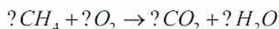
The completed reaction equation is \( CH_4 + 2O_2 \rightarrow CO_2 + 2H_2O \)
Substitute the molecular weights into the reaction equation and reduce the terms until methane is 1 kg.
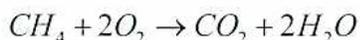
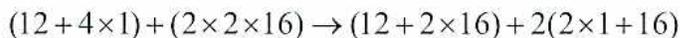
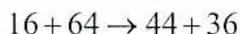
1 kg of methane + 4 kg of oxygen \( \rightarrow \) 2.75 kg of carbon dioxide + 2.25 kg of water
- 2. Define proximate and ultimate analysis of fuels and provide a brief description of how they are carried out. Indicate which one is more accurate and explain why.
Proximate analysis determines the composition of the fuel by mechanical means. This analysis is carried out on a solid fuel such as coal and determines the percentage of moisture, volatile material, fixed carbon and ash. The method used to obtain the analysis is to heat the coal and thus drive off the moisture and volatiles. Then the carbon is burned and the residue left is considered to be the ash content.
Ultimate analysis breaks down the fuel chemically into all its elements such as carbon, nitrogen, oxygen, hydrogen and sulphur. This analysis must be carried out in a chemical laboratory by a qualified chemist.
Ultimate analysis is more accurate since it provides the actual composition of the fuel while the proximate analysis is only approximate.
- 3. The following is the ultimate analysis of a sample of coal. Using Dulong's formula, calculate the heating value.
Carbon .....82.15%
Hydrogen .....5.09%
Sulphur .....0.82%
Oxygen .....7.32%
Nitrogen .....1.48%
Ash.....3.14%
$$ \begin{aligned} \text{Heating Value kJ/kg} &= 33\,700C + 144\,000\left(H_2 - \frac{O_2}{8}\right) + 9\,300S \\ &= 33\,700 \times 0.8215 + 144\,000\left(0.0509 - \frac{0.0732}{8}\right) + 9\,300 \times 0.0082 \\ &= 27\,684.55 + 144\,000(0.0509 - 0.0092) + 76.26 \\ &= 27\,684.55 + 144\,000(0.0417) + 76.26 \\ &= 27\,684.55 + 6\,004.80 + 76.26 \\ &= 33\,765.61 \text{ kJ/kg (Ans.)} \end{aligned} $$
- 4. Describe how the heating value of a fuel may be found by using a bomb calorimeter.
A measured amount of fuel is placed inside the bomb. A fuse wire is connected to the igniter terminals and is suspended immediately above the fuel sample. The bomb is then closed up and filled with oxygen to a pressure of about 2070 kPa and then placed within the water bucket. The water in the bucket is circulated continuously by a motor driven stirrer. The fuel is then ignited by passing an electric current through the fuse wire.
The heat liberated by the combustion of the fuel is calculated from the temperature rise of the water and the known mass of the water plus the water equivalent of the metal parts. The water equivalent is simply the mass of the metal multiplied by the specific heat of the material.
- 5. Calculate the theoretical air required to combust the coal described in question 3.
$$ \begin{aligned} \text{Air required} &= \left[ \frac{8}{3}C + 8\left(H_2 - \frac{O_2}{8}\right) + S \right] \frac{100}{23} \\ &= \left[ \frac{8}{3}(0.8215) + 8\left(0.0509 - \frac{0.0732}{8}\right) + 0.0082 \right] 4.3478 \\ &= [2.1907 + 8(0.0509 - 0.0092) + 0.0082] 4.3478 \\ &= [2.1907 + 8(0.0417) + 0.0082] 4.3478 \\ &= [2.1907 + 0.3336 + 0.0082] 4.3478 \\ &= [2.5325] 4.3478 \\ &= 11.01 \text{ kg of air/kg of coal (Ans.)} \end{aligned} $$
- 6. What are the three major components of flue gas that are normally analyzed? Explain what each one indicates.
Flue gas should be analyzed for three components:
-
- 1. \( \text{CO}_2 \) , the product of complete combustion corresponding to a maximum liberation of heat
- 2. \( \text{CO} \) , the product of incomplete combustion as an indicator of the quantity of undeveloped heat escaping to the stack
- 3. \( \text{O}_2 \) , as an indicator of the excess air being used.
- 7. A chimney is 50 m high and the temperature of the gases entering the chimney is \( 326^\circ\text{C} \) . The plant is located at sea level and the ambient air temperature is \( 30^\circ\text{C} \) . Calculate the theoretical draft produced in Pa.
Theoretical draft:
$$ \begin{aligned} D &= 34.06 \times HP \left( \frac{1}{T_1} - \frac{1}{T_2} \right) \\ &= 34.06 \times 50 \times 101 \left( \frac{1}{303} - \frac{1}{599} \right) \\ &= 34.06 \times 50 \times 101 (0.0033 - 0.0017) \\ &= 34.06 \times 50 \times 101 (0.0016) \\ &= 34.06 \times 50 \times 0.1616 \\ &= 275.20 \text{ Pa (Ans.)} \end{aligned} $$
- 8. A fan develops 1 300 Pa static pressure and 150 Pa velocity pressure when delivering 2 300 m 3 /min of air. The static efficiency is 77%. Calculate the following:
(a)
$$ \begin{aligned}\text{Static Air Power in kW} &= Q \times P_s \\ &= \frac{2\,300 \times 1.3}{60} \\ &= 49.83 \text{ kW (Ans.)}\end{aligned} $$
(b)
$$ \begin{aligned}\text{Total pressure} &= \text{Static pressure} + \text{Velocity pressure} \\ &= 1\,300 + 150 \\ &= 1\,450 \text{ Pa}\end{aligned} $$
$$ \begin{aligned}\text{Power output} &= V \times P_t \\ &= \frac{2\,300 \times 1.450}{60} \\ &= 55.58 \text{ kW (Ans.)}\end{aligned} $$
(c)
$$ \begin{aligned}\text{Static efficiency } \eta_s &= \frac{\text{Static air power kW}}{\text{Shaft power kW}} \\ \text{Shaft power kW} &= \frac{\text{Static air power kW}}{\text{Static efficiency } \eta_s} \\ &= \frac{49.83 \text{ kW}}{0.77} \\ &= 64.71 \text{ kW}\end{aligned} $$
(d)
$$ \begin{aligned}\text{Mechanical efficiency } \eta_m &= \frac{\text{Power output kW}}{\text{Shaft power kW}} \\ &= \frac{55.58 \text{ kW}}{64.71 \text{ kW}} \\ &= 85.89 \%\end{aligned} $$
Chapter 6 Solutions
Firing and Draft Equipment
1. Describe the factors that are considered when designing a steam generator furnace.
Furnace design is dependent on the fuel type and quality in use, the method of burning the fuel, and the required heat release rate. Heat release requirements are a function of the steam evaporation rate, pressure, and temperature. Criteria for the design of a steam generator furnace are as follows:
- • Sufficient volume to contain a fire which will release enough heat to enable the design steam evaporation rate.
- • Provision for heating of superheaters, reheaters, economizers, and air preheaters as needed.
- • A geometry and size which maximizes the heat transfer surface.
- • A gas flow velocity which will allow for sufficient retention time for complete fuel combustion.
- • A geometry and size, and gas flow velocity, which will minimize erosion of the pressure parts, fittings, and other parts.
- • Provision for mounting of burners in sufficient size, number, and arrangement to provide the required heat release rate.
- • Provision for effective cleaning of heat transfer surfaces by sootblowing, without allowing ash or slag to plug off any gas passages.
- • Maximum thermal efficiency, as measured by completeness of combustion and by the lowest practical exit gas temperature.
- • For solid fuels, a geometry and size which will ensure that slag is deposited in the furnace prior to the gases entering the superheater. This requires that gas temperatures at the superheater inlet are below the ash fusion temperature.
2. Where would you expect to find a separately fired superheater installed?
Applications of fired superheaters include the following:
- • Industrial processes where tolerance for temperature variation is low.
- • Industrial processes where steam temperatures up to 650°C are required, that cannot be attained in a conventional steam generator.
- • Retrofitting of plants that will be required to superheat steam, where the original boilers installed produce either saturated steam, or steam with a lower degree of superheat than will now be required. This may be required by plant expansions that will create longer steam distribution lines, thus creating a greater risk of condensation forming in the piping.
A specialized use of fired superheaters is seen in some designs of nuclear power plants, where heat from the nuclear reactor is transferred to a boiler by circulating the coolant water. If the coolant cannot be elevated to a sufficiently high temperature to produce the required degree of superheat in the boiler, then an additional superheating stage is required.
3. Describe and compare the different compositions of refractory and the forms in which refractory is used.
Refractory is composed of natural clays (firebrick) or synthetic ceramic materials, primarily metal oxides, that have very high melting and spalling temperatures, and so are able to withstand furnace temperatures without damage. Examples of such materials are alumina ( \( \text{Al}_2\text{O}_3 \) ), silica ( \( \text{SiO}_2 \) ), and magnesia ( \( \text{MgO} \) ). Alumina and silica produce “acid” refractories, while magnesia produces a “basic” refractory. Basic refractory is less common, more expensive, and less resistant to thermal shock and erosion, but it is better suited to withstanding corrosion by alkali metal compounds in ash. It is more often found in process furnaces than in boiler furnaces. Alumina has a low porosity which makes it very durable, and so it is used in amounts from 60% to 90% of the total refractory composition in order to extend the material’s life. This advantage is often offset by alumina’s high cost compared to silica.
Refractory is sold in a “hard” form which is available as bricks, plastics, or castable refractory, all of which are rigid once they applied and cured. Bricks, in various sizes and shapes, are bound and cured into their cast brick shape with calcium cement or a binding containing phosphoric acid. They are usually placed into a furnace without any mortar or adhesive to hold them together, and provide excellent protection against erosion and corrosion due to their dense, non-porous nature. Plastic refractory uses a binder that results in a plastic material that can be applied to various irregular shapes, where brick cannot be easily used, and it is then hardened or “set” by air and heat. Metal and ceramic anchors are used to hold this material in place once it is applied. Castable refractory, or fireclay, is an inexpensive form that is sold as a dry powder, ready to be mixed with water and applied by pouring or by pressure applicators. Castable refractory has the poorest resistance to erosion and corrosion, but is the best thermal insulator of the hard refractory types.
Refractory is also sold in a “soft” form, consisting of ceramic fibres in the form of blankets, boards, or soft blocks that remain flexible in service. They have the advantages of being lighter in weight, more resistant to rapid temperature changes, and better thermal insulators than hard refractories, but they are less resistant to erosion and corrosion.
4. Describe a low NO x burner that is used for both gas and oil firing.
Combustion is often staged, or conducted in multiple steps, which reduces flame temperature and thus reduces NO x . This is accomplished by controlling the injection of fuel into the air stream (fuel staging), or of air into the fuel stream (air staging), at two or three locations. This is done with the use of venturi eductor sections in the burner, rather than a single point of fuel / air mixing. For example, primary air is often admitted radially, producing a swirl in the fuel / air stream that is emphasized by a swirler. Secondary air is added downstream in a similar fashion, and tertiary air may be admitted at the burner throat. Gas fuel is admitted through a poker, ring, or orificed pipe, while oil is atomized and injected through a steam or mechanical atomizer.
Another approach is to design a staged burner for internal staging of the flame itself, stratifying it into layers that are alternately fuel-rich and oxygen-rich. The fuel-rich portions produce less NO x , and their reducing environment also destroys NO x that has already been created in the adjacent oxidizing environments. Unburned fuel from the fuel-rich portions of the flame will be migrated to the fuel-lean areas in order to achieve complete combustion.
Flue gas recirculation (FGR) can also be utilized by mixing flue gas with the gas fuel internally within the burner.
5. Sketch and describe a constant pressure spill-return mechanical oil atomizer.
Liquid fuels such as oil require some means of atomizing the fuel within the burner, meaning that the liquid is broken into fine droplets in order to maximize its surface area and, thus, its contact with the combustion air.
In a spill-return atomizer, some oil drains from the atomizer back to the oil gun inlet. The operating range is increased to a 4:1 turndown ratio, because adjusting the amount of oil spill will control the firing rate.
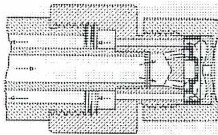
A detailed cross-sectional engineering drawing of a mechanical oil atomizer. The diagram shows a central cylindrical body with internal passages. On the left, there is a fuel inlet leading to a central chamber. The right side features a nozzle assembly with a small orifice for fuel discharge. Internal components include a swirl chamber and tangential ports that allow for oil to be recirculated (spilled) back through an outer annular passage. Dotted lines indicate internal flow paths and structural details of the assembly.
Mechanical atomizers depend on the pressure drop across the tangential ports in order to increase the oil velocity, which affects the droplet size. This limits their capacity, because there is a limit to the pressure that each type of oil can be raised to by the oil pumps. One method of addressing this limitation is to use a constant delivery pressure feature in a spill-return atomizer. Spill rate is used to control pressure drop rather than throughput, giving a much higher turndown ratio.
6. Describe the principle and design of a bowl type coal pulverizer.
In a bowl or roller mill, coal is admitted at the top of the pulverizer and falls to the rotating bowl, or table, near the bottom. Three angled rollers are suspended either just above the bowl or in contact with it, and although they are free to turn, they are not powered. As the bowl turns, coal is crushed between it and the rollers. The rollers are positioned by springs which maintain tension on the surface of the coal load, but also enable them to “float” vertically as the depth of the coal load changes. Primary air entering at the bottom moves upward through the pulverizer, carrying with it the coal particles that have been pulverized finely enough to be conveyed. A classifier section at the top of the pulverizer admits only particles of a pre-determined maximum size, and the remainder fall back into the pulverizer to be reground. Pyrites are rejected over the rim of the bowl and are swept into a hopper beneath by a rotating arm. Bowl mills may be installed with either an integral exhauster, or as pressurized mills using an external forced air fan.
7. Describe a wet bottom ash removal system for a coal fired steam generator, including overflow and seal trough.
Pulverized coal fired furnaces are open at the bottom, with one or more collection hoppers placed at the opening to collect the bottom ash that falls. Each hopper is shaped like an inverted pyramid, with sloped slides that enable the ash to slide down for emptying from the bottom. These hoppers may be filled with water, producing a wet bottom furnace, and the ash chunks that fall into the water will be cooled for conveying as well as fractured by the quenching effect. The hoppers will be periodically emptied through rotating grinders at their bottom into a conveying pipeline. A venturi and water nozzle, or jet pump, beneath the grinder will produce the hydraulic force needed to convey the ash, and also induce a pressure reduction that helps to draw the ash through the grinder and into the piping. Angled nozzles in the hopper side panels often assist this function. The grinder's purpose is to ensure that the ash particles are small enough to avoid plugging the pipeline. The ash can be deposited into a sump, dewatering bin, or external settling pond.
A normal water level is maintained by an overflow weir, so that falling ash cannot overfill the hopper and thus risk having relatively cool water contact the hot steam generator tubes. The hopper will also be fitted with an open top seal trough along its top perimeter, which is filled with water. The hopper is supported from below, and the steam generator is suspended from above. The two are not attached, and the steam generator is thus free to expand vertically as it heats without stressing the hopper. The bottom of the steam generator casing is within the trough, and the water serves as a seal to prevent air ingress, which would upset the furnace draft and excess air control systems.
8. What would you look for to judge the amount of slag formation in a coal fired furnace?
Slag accumulation can be monitored by watching the following variables, and looking for trends as they change:
- • Furnace gas exit temperature. This may be visible to the operator as economizer gas inlet temperature, air preheater gas inlet temperature, and / or stack temperature.
- • Burner tilt position, which will move downward as the waterwalls acquire slag.
- • Desuperheater spray flow rate, which will increase as the waterwalls acquire slag.
- • Superheater and reheater steam temperatures, which will increase as the waterwalls acquire slag and the control mechanisms exceed their range of control.
In some plants, specialized computer software is used to monitor these and other variables, in order to automatically diagnose the amount of furnace fouling, and to warn the operator that sootblowing or some other corrective action is required.
9. Describe the two main designs of furnace I.D. and F.D draft fans.
Axial fans have flows that are parallel to the fan's rotational axis, with the gas moved by a propellor or by turbine-style blading. Centrifugal or radial fans move gas from the centre of a wheel, or impellor, radially outwards perpendicular to the rotational axis, and are the more common of the two types for boiler draft fan use.
10. Describe and compare three ways in which steam generator draft fan output can be controlled.
Discharge dampers are sliding or pivoting blades, parallel to one another, that are positioned in the fan discharge duct in order to throttle the gas flow. This produces a significant pressure drop, and an increase in the back pressure on the fan. Efficiency is reduced because the fan's power requirement is not reduced in proportion to the reduction in volumetric output. An advantage of this arrangement is its simple design, which makes the dampers easy to control.
Inlet vanes are pivoting blades that are mounted radially around the axis of fan rotation at the inlet to the fan. They are positioned in order to throttle the gas flow that is available to the fan. The vanes impart a spin to the gas flow, which reduces fan pressure and often reduces the power requirement. As flow is reduced, power usage is reduced even further and fan performance often improves, so that efficiency is enhanced by installing inlet vanes. However, control of the vanes by an automated control system and external positioner is slightly more difficult to accomplish.
Fan speed control can be achieved with turbines, variable speed motors, or two speed motors as the prime movers, or by the use of fluid couplings. This approach provides excellent control and more efficient power usage than either dampers or vanes, but can be the most expensive method to install.
If the fan is an axial flow type, it can be controlled by varying the pitch of its blades.
Chapter 7 Solutions
Combustion Control and Safeguards
- 1. Describe the advantages, disadvantages, and applications of Steam Flow / Airflow and Fuel Flow / Airflow combustion control philosophies.
The most direct way to determine whether the air and fuel flows are in the correct proportion is to measure them, and then to adjust them when necessary in order to maintain the correct ratio. However, with certain types of fuel, especially including solid fuels such as coal, it is difficult to measure fuel flow. In those cases, the steam flow is measured and is used an inferred indication of fuel consumption, or heat absorption. The airflow is also measured, and is maintained in a certain ratio with the steam flow. In this way, a ratio is indirectly maintained between the airflow and the fuel flow.
The fuel flow / airflow system can be used where it is practicable to measure the fuel flow to the furnace, as well as the airflow. These measurements can then be used to maintain the correct fuel / air ratio.
Fuel flow / airflow control is common for gas and oil fired boilers, because the fuel / air ratio is maintained even when the boiler load is changed abruptly. However, this system will be inaccurate when the heating value of the fuel changes, and so it is less satisfactory for solid fuels, which can change considerably in a short period of time. For firing with solid fuel, or with other fuels such as black liquor which have variable heating values, this control philosophy requires a provision to incorporate another variable in order to trim the output signal to maintain a proper air / fuel ratio. Such variables in use include flue gas oxygen analysis, steam flow, or megawatt generation.
Steam flow / airflow systems will be inaccurate during large changes in boiler load, because of the temporary need to overfire or underfire the boiler. Error in the air / fuel ratio can also occur as a result of changes in feedwater temperature or steam temperature, because the relationship of steam flow to heat input can be affected by changes to feedwater or steam temperature. This is because a variation of either temperature necessitates more or less transfer of heat to each unit mass of steam. This may require a temperature compensating loop in the control system, or some form of manual compensating input.
2. Using sketches, describe two ways in which series / parallel combustion control can be achieved.
A modification of the series and parallel methods of combustion control involves the application of a correction factor to the fuel or combustion air supply signal, using another signal to maintain an appropriate ratio between the two.
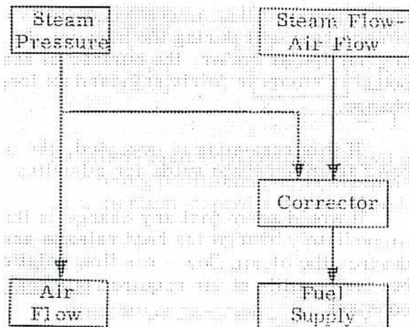
This block diagram illustrates a parallel combustion control system. At the top, there are two input blocks: "Steam Pressure" on the left and "Steam Flow-Air Flow" on the right. The "Steam Pressure" block has a vertical line leading down to an "Air Flow" block at the bottom left. The "Steam Flow-Air Flow" block has a vertical line leading down to a "Corrector" block in the center. From the "Corrector" block, a vertical line leads down to a "Fuel Supply" block at the bottom right. A horizontal line branches off from the vertical line of the "Steam Pressure" block and points to the "Corrector" block, indicating that the steam pressure signal is used as a correction factor for the fuel supply.
In essence, this is a parallel control system, with a correction factor used to re-adjust either airflow (for fuel bed firing) or fuel flow (for suspension firing) to give optimum conditions for safe, efficient combustion.
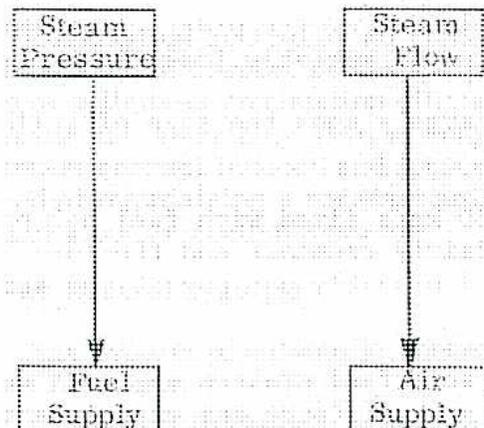
This block diagram illustrates a series combustion control system. At the top, there are two input blocks: "Steam Pressure" on the left and "Steam Flow" on the right. The "Steam Pressure" block has a vertical line leading down to a "Fuel Supply" block at the bottom left. The "Steam Flow" block has a vertical line leading down to an "Air Supply" block at the bottom right. There is no cross-connection between the two vertical lines, meaning each signal independently controls its respective supply.
In this arrangement, the steam pressure signal is used to regulate the fuel supply, and the steam flow signal is used to regulate the quantity of combustion air. The reasoning behind this arrangement is that the heat that is liberated from the burned fuel will determine the quantity of steam generated, and the balance between this and the load demand will be indicated by the steam pressure.
3. Describe the functioning of a turbine and boiler integrated control system.
Boiler-following and turbine-following control strategies can be combined to take advantage of the best features of both.
In this strategy, Megawatt demand and steam pressure both provide signals to both the boiler combustion control loop and to the turbine throttle valves. In each control loop, the two input signals can be biased differently, so that the integrated control can be set up to emphasize the characteristics of either turbine-following or boiler-following. For example, steam pressure can be the main control variable for the turbine throttle valves, achieving the stable steam conditions of turbine-following, while still using the boiler's stored energy to achieve the faster responses of boiler-following. Megawatt demand is then used as a trim signal for the turbine control system.
Integrated control is accomplished, in part, by using a number of ratio controllers. Each one receives inputs from two different variables, and provides an output that ensures that the correct ratio, proportion, is maintained between them.
4. Explain the operation of a fan failure interlock for a large steam generator with two 50% capacity forced draft fans and two 50% capacity induced draft fans.
In this case, the interlock system may not be required to trip the fuel if a single fan fails. If one of the two forced draft fans fails, the fuel can be limited to a maximum of 50% of full load flow, or whatever load can be handled safely with one fan. If one of the two induced fan fails, then there are different options regarding how the interlock can work:
- • One forced draft fan could immediately be tripped, and the fuel flow limited to 50%.
- • No action could occur unless the furnace draft reaches a certain pre-determined safe maximum, at which time the fuel supply is shut down. This option gives the operator a chance to intervene manually, possibly avoiding any greater upset than is necessary.
If there is only one of either the forced draft or induced draft fans in service, and it fails, then these options are not available, and the interlock will be programmed to shut off all fuel immediately.
5. Explain the operation and limitations of a rectifier rod used as a flame detector.
A rectifier rod, or flame rod, is a rod which is energized by an external AC electrical supply. Exposure to flame causes the rod to rectify the AC current into DC current. External measuring circuits are used to detect the DC current, and this is used to initiate a signal that flame has been detected. Because the flame rod is inserted directly into the flame, the material used must be able to withstand high temperatures. A specialty alloy called Kanthal is commonly used.
Rectifier rods do not work properly in a oil fired furnace, and so are restricted to gas firing. They can withstand temperatures up to approximately 1350°C, but are usually not recommended for use at temperatures greater than 815°C. Because of their temperature limitation, they are suited to use with small burners only. In larger applications, they are well suited to use with pilots, but not to the main burners.
6. Describe a typical sequence for a packaged boiler programmed start-up and shutdown.
- • Start-up is initiated by an operator pushbutton, low steam pressure switch, low water temperature switch, or centralized plant control system.
- • The forced draft fan starts. (It is assumed here that the boiler furnace is of the forced draft type, without an induced draft fan, as most packaged boilers are designed this way.)
- • Air pressure is sensed in the furnace and the air pressure interlock is satisfied. This indicates that there is sufficient airflow for a furnace purge.
- • Furnace purge proceeds for a pre-determined length of time, typically five minutes.
- • The pilot ignition transformer is energized.
- • The pilot fuel valve is opened and the pilot is lit.
- • A pre-determined pilot proving period is allowed to elapse, after which the pilot flame detector must sense a flame, or else all pilot and main fuel valves will be held closed.
- • The main fuel block valve is opened and the main burner is lit.
- • A pre-determined main flame proving period is allowed to elapse, after which the main flame detector must sense a flame, or else all pilot and main fuel valves will be held closed.
- • The pilot ignition transformer is de-energized.
- • The main fuel control valve is released to set the firing rate as required by the steam or hot water demand.
- • Steam pressure or hot water temperature is maintained by modulating the fuel flow.
- • Shutdown is initiated by an operator pushbutton, high steam pressure switch, high water temperature switch, or centralized plant control system.
- • The main and pilot fuel valves are closed.
- • Furnace post-purge proceeds for a pre-determined length of time, which is highly variable (15 seconds – 5 minutes.)
- • The forced draft fan is shut down.
7. List the abnormal situations which would cause a packaged boiler programmable controller to shut all fuel valves.
- • Flame failure detectors (pilot and main flame)
- • Forced draft fan failure
- • High steam pressure sensors (depending on the plant's operating needs and philosophies)
- • High water level (depending on the plant's operating needs and philosophies)
- • Low water level
- • High temperature (for hot water boilers)
- • Low fuel pressure
Chapter 8 Solutions
Environmental Monitoring
1. What is meant by \( PM_{10} \) and \( PM_{2.5} \) , and what is the significance of these terms?
Finer particles are of particular concern for health reasons, and two standards exist for their differentiation. One of these, \( PM_{10} \) , refers to particulate that is less than 10 microns in diameter, and so is readily inhaled into the lungs. There is a possible connection between \( PM_{10} \) particles and early deaths of people with otherwise unrelated heart or lung ailments.
\( PM_{2.5} \) particles are those that are less than 2.5 microns in diameter. These particles are characterized by deep penetration into the lungs, and by their contribution to smog. There are indications that \( PM_{2.5} \) particles are particularly harmful to human health, but the research in this area is incomplete.
2. What are the two basic categories of CEMS equipment, and what are the three basic components of a CEMS?
CEMS can be classified into two basic categories. Extractive systems draw a sample of gas from the stack and transport it to the analyzers, which may be at ground level and slightly removed from the stack. The second approach is to use in-situ analyzers which are mounted on the stack itself, avoiding gas transport problems but placing the instruments in a less friendly environment. Many CEMS installations use a combination of extractive and in-situ instruments.
A CEMS consists of three basic components:
- • The sampling interface between the stack gas and the analyzer. In an extractive system, this consists of gas conditioning devices and can be quite elaborate. In an in-situ system, the interface is basically the mounting of the analyzer itself on the stack.
- • The gas analyzers. There may be a separate analyzer for each parameter being monitored, or a more complex analyzer that is capable of measuring multiple parameters.
- • A data acquisition and controller system, which automatically monitors and controls the system's performance and records data for regulatory reporting.
3. What are the three main elements of CEMS regulations?
- • Rules for implementation, which identify different types of plants as sources for specific regulated contaminants, and specify what types of compliance monitoring and reporting are required as a result.
- • Performance specifications, which list the specifications for the installation and certification of CEMS equipment.
- • Quality Assurance requirements, which list the required procedures, such as preventive maintenance, to ensure that the gathered data is accurate and that it is continuously gathered.
4. Explain the meaning and significance of the terms “BOD” and “COD.”
BOD is the amount of oxygen in mg/l that is consumed by microorganisms (mainly bacteria) in water as the organisms break down food into its usable nutrients. As contamination increases, the number of microorganisms will also increase in response to the larger food supply, and as they break down the contamination, they will consume more oxygen and BOD will increase. As BOD increases, it is therefore an indication of both an increase in organic contamination of the water, and a potential decrease in the oxygen concentration.
COD is the amount of oxygen in mg/l that is required to oxidize both organic and oxidizable inorganic compounds. Both biodegradable and non-biodegradable material is included in the measure.
5. What is the source of the wastewater parameter limits that a plant must work within?
They are contained within legislation, regulations, and plant environmental licenses or permits, all of which are specific to the regulatory jurisdiction(s) that the plant is located within.
6. Explain the concept of a rolling average for environmental monitoring data.
Averaging of data can also be done in two ways, depending on the regulatory requirement. The data can be averaged into blocks of time that are discrete and distinct from each other, and which follow each other in time sequence. Alternatively, the data can be in the form of a rolling average, which is averaged over a certain number of the immediately preceding time periods. The earliest time period in the average is dropped after a new time period has elapsed, and the new time period's data takes its place to complete the average.
7. If CEMS data is invalid, what other sources can be used to backfill the emissions database?
CEMS that are used where emissions are reported in units of mass per unit time (e.g. kilograms per hour) will usually be required to fill in the database for time periods when data is invalid, or if the data is unavailable due to system failure. The fill data that is used can be reference test data, Quality-Assured data from a certified backup system, data from predictive models, or data from algorithms that are approved by the regulatory authority. In Canada, the correlation between emissions and plant load, and / or the mass balance correlation between emissions and fuel flow, if they are pre-determined, can be used to fill in invalid or missing data for up to 168 hours. After that time, backfill data must come from either reference testing or another CEMS.
8. How are problems with an environmental monitoring system's data discovered?
Alarms will give an indication of immediate problems, such as analyzer failures or computer crashes. Data reviews will give an indication of more long-term problems, such as:
- • Data which is inaccurate, to the degree that this is obvious to a visual inspection.
- • Data which is showing a consistent long-term trend in one direction, as though the analyzer were gradually failing.
- • Data which is “flat lining,” meaning that the values are not changing and new data does not appear to be getting collected.
Chapter 9 Solutions
Environmental Control Methods
- 1. What is the biggest disadvantage of a wet scrubber Flue Gas Desulphurization system, and what can be done to address it?
The flue gases within the scrubber will be saturated with water. Any residual SO 2 will be dissolved to form acid, and any solids carryover from the scrubber will also be acidic, so the gas stream must be considered as being corrosive to the remaining ductwork and to the stack. One way of addressing this is to reheat the exit gas, using one of these methods:
- • A steam coil.
- • Addition of hot flue gas which has been bypassed around the scrubber for this purpose.
- • Mixing with hot air.
- • Addition of a duct burner or external heater, using fuel to re-heat the gases.
- • Heat exchangers that pre-cool the scrubber inlet gas as they re-heat the exit gas.
A more common approach is to simply line the ductwork and stack with corrosion resistant material, including acid resistant brick, and to allow the wet gases to continue as they are from scrubber to duct to stack. A wet stack such as this will require a drainage system, because condensate will collect inside of it.
- 2. Explain the chemical reactions in a Selective Catalytic Reduction system.
Ammonia reacts chemically with the NO x , effectively removing it from the gas stream, according to the following reactions:
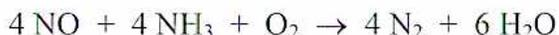
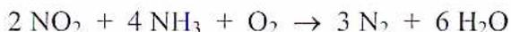
- 3. Briefly explain the following methods of NO x reduction: Flue Gas Recirculation, Burners Out of Service, and water or steam injection.
Flue Gas Recirculation (FGR) - A dedicated fan is used to recirculate flue gas back to the boiler windbox, where mixing devices cause the gas and combustion air to combine, in order to reduce flame temperature.
Burners Out of Service (BOOS) - Fuel flow is stopped to certain burners, with the windbox air registers left open. The end result is a zero or slight increase in excess oxygen, but a reduction in oxygen in the immediate vicinity of the burners, because the fuel / air mixture has become fuel-rich. This will also reduce NO x emissions due to fuel-bound nitrogen. As a general rule, the best effect can be had by selecting the highest altitude burners to be out of service.
Injection of water or steam into the combustion zone of a gas turbine will reduce the combustion temperature.
4. What causes a need for electrostatic precipitator chemical conditioning?
Sodium depletion causes precipitator efficiency, and performance, to degrade gradually, thus also causing stack opacity and particulate concentration to rise. This occurs because a thin, hard layer of sodium-depleted ash, which is difficult to remove by conventional means, develops on the precipitator collecting plates. This ash is highly resistive and impedes the precipitator's electrical performance. It is caused electrically as sodium ions, positively charged, migrate away from the positively charged plates. The problem is compounded by high temperatures, and so it will continue to degrade as the unit is running. Addition of other positively charged ions is not a complete solution, since they do not match the mobility of sodium ions.
5. By what methods can a plant's thermal efficiency be improved?
- • Designing new plants and units for higher steam temperatures and pressures, even exceeding supercritical pressure.
- • Selecting boiler and burner designs that are known to minimize NO x production, as these tend to be high efficiency designs.
- • Proper maintenance of any equipment that is responsible for steam or condensate loss, such as leaking pipe flanges or valve packing, or passing steam traps.
- • Proper maintenance of any equipment that is responsible for boiler furnace air in-leakage, such as passing air preheater seals or damaged boiler casing.
- • Operation of the plant at high load levels, in the vicinity of the rated full load value.
- • Maximizing the efficiency of heat exchangers, condensers, and feedwater heaters by repairing any leaks, and by cleaning of heat transfer surfaces, if required.
- • Recovery and re-use of waste heat wherever possible, including co-generation opportunities.
6. Describe three methods of cleaning the bags in a baghouse.
In the Reverse Gas, or Reverse Air, System, the gas flow is temporarily reversed with the use of a dedicated reverse gas fan, so that the bags are collapsed and ash is dislodged. The bags are then gently re-inflated before full flow is admitted again. This system does not always provide an adequate cleaning of the bags, and is sometimes supplemented with devices to provide sonic vibrations for cleaning.
Shaker systems also deflate the bags initially, and they are then cleaned by vibrating them with a mechanical shaker device.
In the Pulse jet system, when a pulse of air is directed downwards into a bag, then the interior of the bag is pressurized, reversing the flow of gases momentarily and dislodging flyash from the outside as a shock wave travels down the bag. Pulse air pressure is typically in the range of 205 – 690 kPa. Pulses are controlled either by a timer, or by the differential pressure across the bags. Separate control for each compartment is sometimes used. Pulsing of the bags is usually staggered, pulsing one row at a time, in order to limit the possibility of ash re-entrainment in the gas stream, and to reduce the capacity requirement of the air compressors.
7. Explain the operation of an electrostatic precipitator.
The flue gas passes through a number of parallel passages in the precipitator, formed by collector plates, or curtains, hanging in parallel rows from the roof level. A number of wire discharge electrodes are stretched vertically in the centre of these passages. The discharge electrodes are electrically connected to the negative side of a high voltage DC power source, ranging from 30 kV to 75 kV. The collecting plates are grounded. The high electrical potential difference between the discharge electrodes and the collecting plates results in a series of high intensity electrical fields between them. The field creates a uni-polar discharge, or corona, from the electrode wires to ionize gas particles in the flue gas stream. These ionized gas atoms and molecules attach themselves to the flyash, or are already part of the flyash particles, and the negatively charged particles thus formed are forced by the field to the grounded collecting plates. This diversion of flyash out of the gas stream is referred to as "migration". The collecting plates are rapped periodically, and the loosened flyash fall